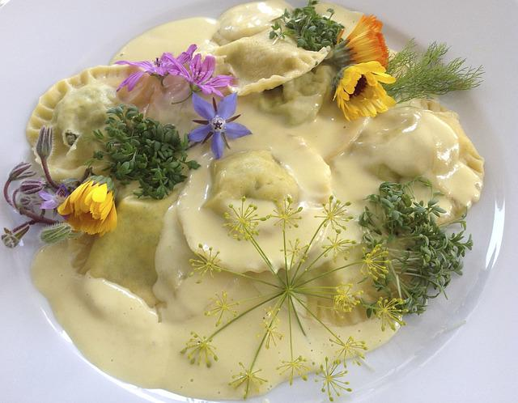

Lemon Cream

Description
Fans of alfredo will be right at home with this creamy sauce, but adding a tart, lemon twist to a is sure to wow your guests.
Ingredients
- 3 tablespoons olive oil
- 2 cloves garlic
- 3 cups fresh broccoli florets
- 3 cups coarsely chopped cauliflower
- 1 teaspoon lemon-pepper seasoning
- 1 cup chicken broth
- 1 (12 ounce) package frozen gnocchi
- ¼ cup lemon juice
- 1 pint heavy cream
- 1 tablespoon capers
- ½ cup finely grated Parmigiano-Reggiano
- salt and ground black pepper to taste
Steps
- Heat oil over medium heat in a large high-sided pan with a lid. Add garlic and cook until fragrant, about 1 minute. Add broccoli, cauliflower, and lemon-pepper; mix well. Cover and cook for 4 minutes. Remove lid, mix well, and pour in chicken broth. Replace lid and let the broth steam cook the vegetables for about 4 minutes.
- Meanwhile, bring a large pot of lightly salted water to a boil. Cook gnocchi in the boiling water until they float to the top, 3 to 5 minutes. Drain, reserving 1/2 cup of cooking water to mix into the sauce.
- Pour lemon juice over the vegetables and mix to combine. Pour in cream and capers. Simmer for about 6 minutes. Add gnocchi and pasta water. Season with salt and pepper. Top with Parmesan cheese and let sit for 2 minutes before serving.